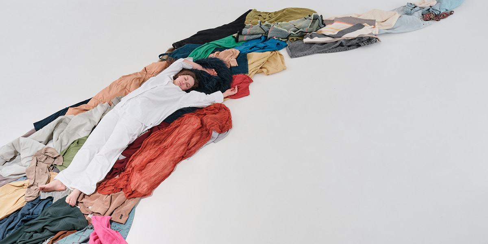

Slow Fashion
Slow fashion is changing the way people think about clothing, personal style, and consumption. Instead of focusing on constantly changing trends and overbuying inexpensive clothing, slow fashion encourages consumers to invest in timeless pieces designed to last longer. As concerns about waste and environmental impact continue to grow, many people are beginning to embrace more intentional shopping habits that value quality, creativity, and individuality over fast-moving trend cycles. Thrifting, capsule wardrobes, and supporting ethical fashion brands have become some of the most popular ways to participate in the slow fashion movement. Many consumers are discovering that owning fewer, more versatile clothing pieces can encourage personal style while also helping reduce unnecessary waste. Sustainable fashion brands are also beginning to focus on ethical labor, environmentally friendly fabrics, and smaller production practices that prioritize long-term sustainability.
Slow fashion is about more than clothing — it reflects a shift toward mindful living and intentional self-expression. As more people begin rethinking the impact of overconsumption, fashion is becoming less about following every trend and more about building a wardrobe that feels personal, meaningful, and sustainable. Through conscious shopping habits and thoughtful styling, slow fashion is helping reshape the future of the fashion industry while encouraging consumers to place the planet first. Social media has also played a major role in the growth of slow fashion by encouraging conversations around sustainability, mindful consumption, and personal style. As more creators promote outfit repeating, secondhand fashion, and intentional shopping habits, consumers are beginning to move away from the pressure of constantly buying new clothing. This shift is helping redefine fashion culture by proving that creativity and self-expression do not need to come at the expense of the environment.

While slow fashion may not completely solve the environmental challenges within the fashion industry, it encourages consumers to become more aware of the choices they make every day. Choosing higher-quality clothing, supporting sustainable brands, and shopping less frequently can all contribute to a healthier relationship with fashion and consumption. As the movement continues to grow, slow fashion is inspiring a future where style feels more thoughtful, creative, and environmentally responsible.